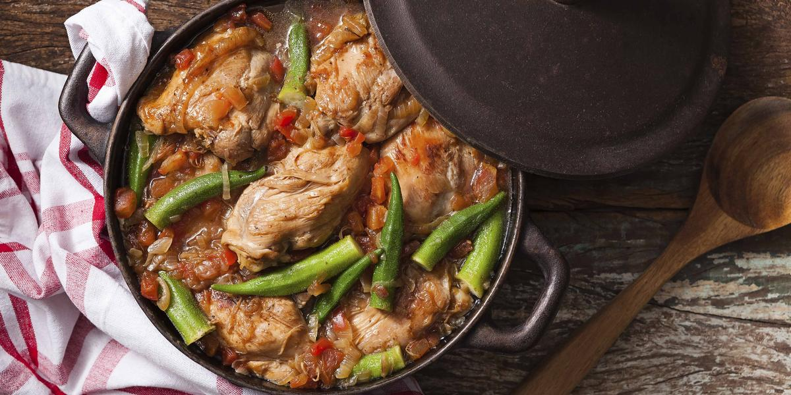

Frango com Quiabo

INGREDIENTES
- 10 sobrecoxas de frango
- 200 ml de óleo
- 01 folha de louro
- 02 cebolas picadas e fritas
- 03 tomates sem peles e sementes
- 500 ml de caldo de galinha
- cheiro-verde picadinho
- 01 kg de quiabos
- 03 dentes de alho amassados
- 01 colher (sopa) de vinagre
- água e suco de limão
- sal e pimenta a gosto
- 03 dentes de alho amassados
PORÇÕES
Serve 10 pessoas
TEMPO DE PREPARO
50 minutos
PASSO A PASSO
- Limpe e lave as sobrecoxas de frando com água e limão.
- Perfure com um garfo, em ambos os lados e tempere com sal, pimenta e alho amassado.
- Coloque óleo em uma panela grande, deixe aquecer e frite os pedaços de frango, virando de vez em quando para dourar.
- Cozinhe os tomates com o caldo de galinha e reserve.
- Em outra panela, coloque óleo, aqueça e refogue o alho.
- Junte os quiabos, bem limpos, com as pontas cortadas e frite mais um pouco.
- Adicione o vinagre e mexa de vez em quando.
- Adicione no frango a folha de louro, e deixe fritar mais um pouco.
- Frite as cebolas e adicione ao frango.
- Depois de bem fritos, junte o caldo de galinha com os tomates e o cheiro verde picado.
- Os quiabos depois de fritos, devem ser escorridos e colocados em uma travessa.